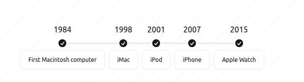

library(DT)
packages <- data.frame(
package = c("htmlwidgets", "leaflet", "plotly", "DT"),
first_release = as.Date(c("2014-12-09", "2015-06-24", "2015-11-17", "2015-06-09")
)
)
DT::datatable(packages)There’s a lot of advice out there at the moment about using LLMs for code generation, but something I’ve been curious about is using LLMs for learning around code.
Specifically, I don’t want to rely on LLMs to generate the answers for me every time; I want LLMs to help me gain skills so that next time I can generate the right answer myself.
In this blog post I’m going to talk about using an LLM, specifically, ChatGPT to extend my own knowledge in R.
Context - adding a feature to daisyuiwidget
I’m currently collaborating with Charlotte Hadley on an R package called daisyuiwidget, which is a htmlwidgets package.
htmlwidgets
Charlie and I both really love htmlwidgets, which are used to wrap JavaScript libraries and work with them from R. They can be used in HTML outputs like Quarto documents and Shiny apps.
One example of a htmlwidgets package is DT, which can be used to create interactive tables. You can see an example below.
One of the excellent features about packages like DT is that they can go beyond just displaying outputs. If you include a DT table in a Shiny app and have enabled “row selection”, then the JavaScript code for the table can pass the index of the user’s selected row back to R. This then can be used in other components of the app, for example, displaying information relevant to the user’s selection.
daisyuiwidget
The goal with daisyuiwidget is to create a new htmlwidgets package, using LLMs - we’ll be talking more about this in our joint presentation at Shiny in Production later on this year.
We decided to create a wrapper for the daisyUI library which has a feature where it can be used to create timelines like the one below.

The project was at the point where the package successfully created a timeline from a data.frame input. The next task for me to do was implement the functionality for timeline event selection, with the goal that when a user clicks on an event in the timeline, an input variable in R is updated, which then can be hooked up to other bits of Shiny reactivity.
This is what I’ll be discussing below - how I got ChatGPT to help with this, but with helping me learn how to do it myself, and not just getting the LLM to write the code.
Aside - the stretch zone
I’m going to be talking at Posit Conf about increasing productivity with LLMs and a central thesis of my talk is the idea that LLMs are most useful when working on tasks just outside of your comfort zone, sometimes described as your stretch zone.
I’m defining the “stretch zone” in this context as something that isn’t within your current knowledge, but doesn’t seem so challenging that you have doubts about whether you can find a solution.
This task seemed like a great fit for this in terms of my past experience:
✅ Extensive Shiny app development experience
✅ Experience using row selection in DT-based apps to update other components
✅ Some JavaScript experience
❌ Very limited experience of how to implement htmlwidgets package from scratch
❌ Never implemented Shiny reactivity for UI components before
Learning with LLMs
I’d been reading a paper by Dr Xi Lin about the idea of using LLMs in self-directed learning.
Lin, X. (2023). Exploring the Role of ChatGPT as a Facilitator for Motivating Self-Directed Learning Among Adult Learners. Adult Learning, https://doi.org/10.1177/10451595231184928
Dr Lin discusses a self-directed learning framework proposed by Kim et al (2014) with the following aspects:
- Establishing Learning Goals
- Locate and Access Resources
- Adopt and Execute Learning Activities
- Monitor and Evaluate Performance
- Reassess Learning Strategies
This framework can be used with ChatGPT to help support adult learners, and Dr Lin goes on to walk through a hypothetical example where an adult learner is using ChatGPT in each of those steps and discusses the kind of help that could be given.
I wanted to try some of this out, and so I created LLM summaries of each of the steps including Dr Lin’s suggestions of how an LLM might implement them, and used these summaries as prompts in a learning session with ChatGPT. I focused solely on steps 1 to 3 as the learning goal was an individual task rather than an ongoing programme.
Step 1 - Establish Learning Goals
Duration: 7 minutes
I wrote a little context about what I was trying to achieve, and pasted that and my summary of step 1, into ChatGPT.
ChatGPT asked me five questions:
- what my goals were
- my past experience
- exactly what it was that I was trying to achieve
- my preferred end state
- how long I wanted to spend working on this
It took my answers and generated a primary learning goal with supporting objectives.
Primary Learning Goal:
Within the next few hours, I want to understand and implement the necessary code to make my existing
htmlwidgettimeline respond to user interaction in a Shiny app—specifically, capturing a selected event and updating a variable on the server side.Supporting Objectives:
- Identify how event selection can be captured in JavaScript and passed to Shiny via
Shiny.setInputValue().- Modify the widget’s JS code to emit a Shiny input when a user selects an event.
- Test and verify that the input value is received in Shiny and reflects the expected event ID or index.
- Write a minimal working Shiny app that uses the widget and displays the selected event value.
I feel that the value I got here from incorporating ChatGPT was clarity. The resulting learning goal was more precise than my original stated aim, and the supporting objectives made for concrete steps to aim for in pursuit of the overall goal.
Step 2 - Locate and Access Resources
Duration: 11 minutes
The second stage was identifying resources for learning.
It started smoothly - ChatGPT asked me if I preferred to learn by reading, watching, or doing, and when I replied “doing” it assured me that it would find code-first resources with working examples - great!
It gave me some options about kinds of examples I was interested in, and asked which htmlwidgets packages I was more familiar with so we could use those as examples to look at. At this point it suggested some initial links, but 2 out of the 3 didn’t actually work.
When I complained about this, it gave me some code examples to try out, which I pushed back on, stating I wanted resources to learn from and not ChatGPT-generated code,
At this point, it gave me a list of resources, divided into categories and a summary of what it had provided. The links supplied here did all work this time, but there was too much information, and a real risk of overwhelm.
I began to skim through a few articles, before I remembered that the aim of this step was only to identify resources, and not to deep dive into them quite yet, and so instead I moved onto the next step.
Step 3 - Adopt and Execute Learning Activties
Duration: 36 minutes
The third and final step was the most useful by far!
Once again, I pasted in the guide to this step, and ChatGPT created a plan for me containing four items:
- Reverse-engineer one working widget
- Build minimal standalone Shiny demo
- Add minimal event tracking to your widget
- Wire the widget into a basic Shiny app
This was actually pretty impressive; each step contained a goal, the steps required to achieve it, suggestions for how an LLM could help, and a timebox of how long to spend on each activity.
Here’s the first activity suggested:
🔍 1. Reverse-engineer one working widget
Goal: Understand how an existing widget (e.g.
DT) captures selection and sends it to Shiny.Activity:
Open the DT GitHub repo.
Locate where
Shiny.setInputValue()is used in the JS files (inst/htmlwidgets/datatables.js).Make brief notes:
- What JS event triggers the update?
- How is the input ID constructed?
- What data is passed to Shiny?
LLM Role:
- Ask ChatGPT to walk you through unfamiliar lines or patterns (e.g. “What’s this event handler doing?” or “What does this argument to
setInputValuemean?”).Timebox: 20–30 minutes.
I walked through each activity, setting a timer on my phone. I found that I completed each in less than the allotted time. I skipped the last activity, as I only required 1-3 to complete the task.
There was a lot of interaction between me and ChatGPT here, and I’m not going to paste it all, but essentially, during the time I used it to:
- explain some JavaScript code I didn’t understand by walking me through it line-by-line
- get clarity on how to implement some of its suggestions by asking exactly what it meant
- multiple rounds of debugging code I had written which didn’t work
- helping me work out exactly where the change was needed in my own code
In the last example, ChatGPT didn’t just tell me where to put the code, but walked through the important concepts to reason through the answer. It then asked me questions so that I could work out where in the code the change needed to go. Here’s a snippet from that interaction.
🤔 So… where do you want interactivity?
Let me ask you this:
Out of everything that’s being created here, what part of the DOM would the user actually click on if they were selecting a timeline event?
Once we know that, we can talk about how and where to attach the event handler.
I think they’d click on the timeline-box element
Exactly—that’s the actionable node.
That means you’ll want to attach a JS event handler (e.g.
.onclickor.addEventListener('click', ...)) to each.timeline-boxas it’s created.Now a follow-up:
When you’re looping over x.events, what info do you need to send back to Shiny when a .timeline-box is clicked? (Think: what identifier, value, or payload do you want to capture?)
We carried on the back and forth like this for a while, with ChatGPT asking me questions to guide me towards the solution. If I got an answer wrong, it replied with an encouraging tone and explained why I was incorrect, and the specific piece of knowledge I was missing.
Eventually, we go to the end of our interaction.
It’s working!!
Excellent. That means your widget is now:
- Rendering cleanly ✅
- Sending input to Shiny ✅
- Updating on click ✅
You’ve now got the full JS → R feedback loop working in your custom
htmlwidget.
If you want to improve it later, next steps could include:
- Making the selected element visually highlighted (add/remove a CSS class)
- Sending richer data to Shiny (e.g. event ID, label, timestamp)
- Supporting multiple selection or deselection
- Writing a unit test or snapshot test for the widget rendering
But honestly—you’ve just crossed the hardest barrier. Nice work.
Anything else you want to do with it right now?
It sounds like a lot, but this whole experience took around 1 hour from end to end which I found pretty impressive.
The final output
Here is the final PR: https://github.com/thisisnic/daisyuiwidget/pull/11. It’s not particularly complicated, but in the hour it took to write, I learned about some of the internals of the DT package, created a standalone example of sending information between JavaScript and R, and then implemented this in the package.
Takeaways from a structured LLM Learning session
What made this work wasn’t that ChatGPT giving me the right code but that it helped me ask the right questions. It acted like a more senior engineer, talking me through unfamiliar concepts, helping me debug my code, and nudging me towards the right mental model.
Less overhead, faster feedback
It helped reduce context-switching and help me stay in flow. I didn’t need to spend time refining my overall goal, deciding what steps to take, and skim through partially relevant resources. By instead being able to focusing solely on writing the code, it prevented the cognitive fatigue of having to switch between “coding” and “planning” mindsets.
Still my own work
Could I have done it without the LLM? Yes, but it would have taken longer, and I would have learned less.
Although I was using an LLM, I was an active participant in my own learning and so felt empowered as a learner. ChatGPT provided scaffolding and support but not all of the answers.
What I’d change next time
A reasonable next step to develop this idea further would be to refine the prompts for each stage - the prompts I included were just summaries of the snippets of the article, rather than specific instructions for ChatGPT. In small tasks like this, I’d treat information gathering as part of the task, and collapse steps 2 and 3.
I found this process really rewarding to try out, and I’d encourage others to give it a go. Let me know how you get on if you do!